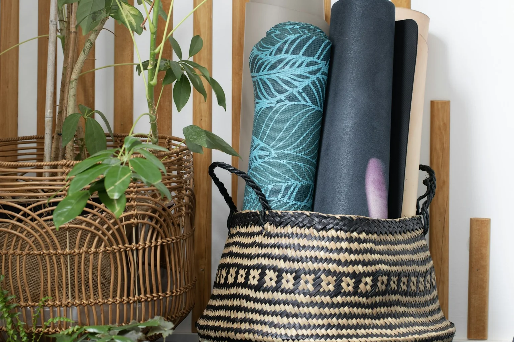
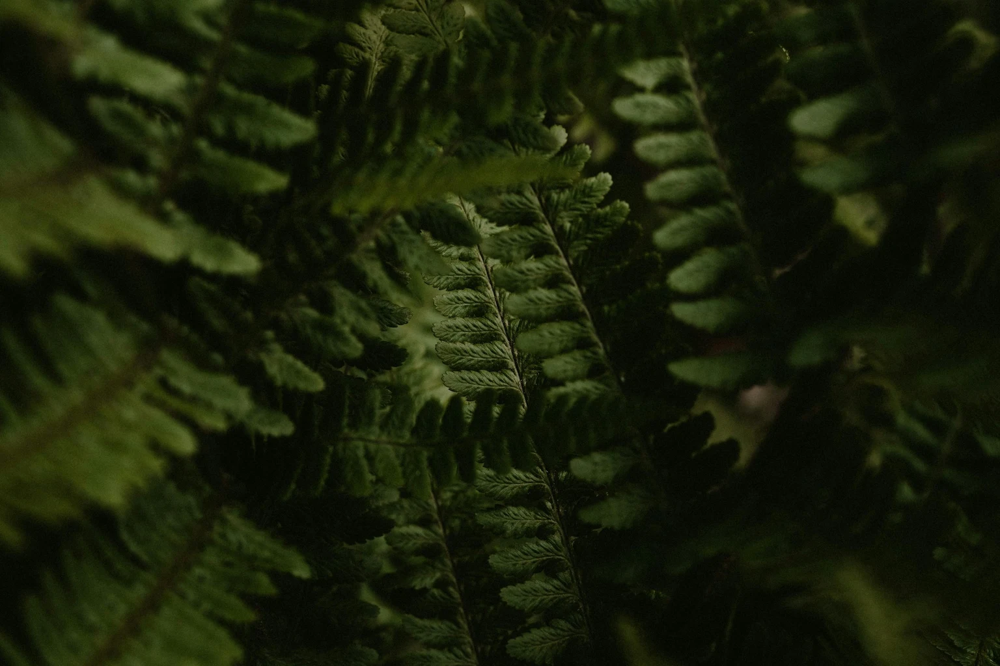
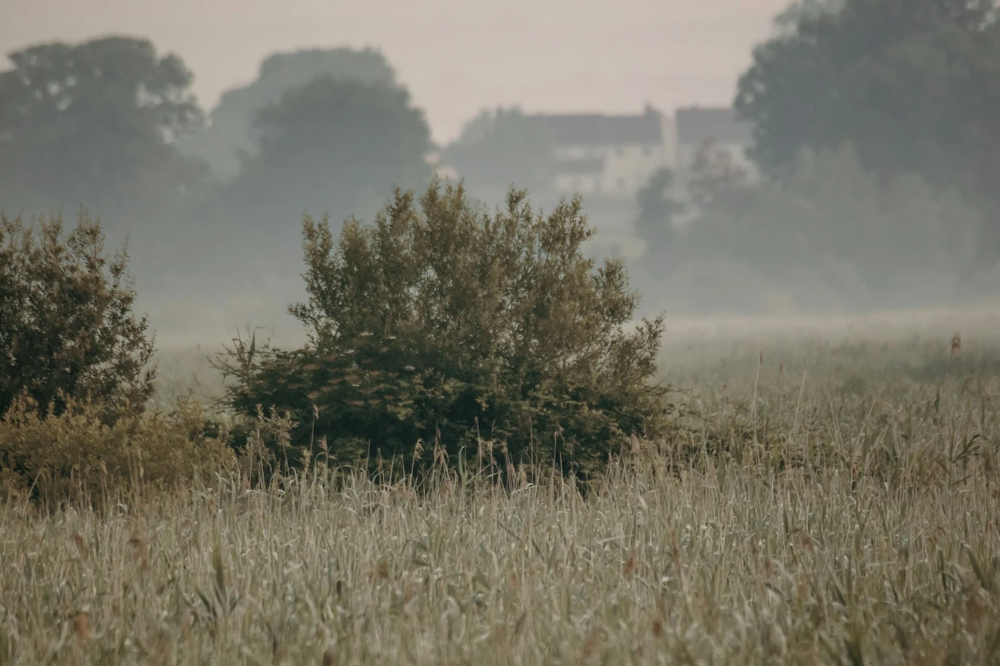

Find your calm
Gentle movement and breathing to ease the rush and help you settle into the moment.
A softer beginning to your wedding day. Gentle movement, a deeper breath and time to be together before the celebrations begin.

Your wedding morning can pass in a blur of schedules, photographs and final touches. Bridal Flow creates a little room for something different.
We come to your wedding venue or accommodation and lead a warm, unhurried yoga experience designed around the people you love. No pressure to be flexible. No expectation to be experienced. Just space to arrive in the day.
Discover the experienceGentle movement and breathing to ease the rush and help you settle into the moment.
An intimate experience for the bride, close friends and family — shared without an agenda.
An approachable practice tailored to the group, the setting and the kind of morning you want.

We arrive before the preparations take over, make the space comfortable, then guide you through the kind of movement that fits your morning.
All three sessions welcome up to 12 people. Choose your length, then shape the style, pace and difficulty with Cara.
A private moment before the day unfolds.
Space to move, laugh, exhale and reconnect.
A little more time together before everything begins.
Prices are per session for up to 12 people. Any travel or equipment costs are agreed in your quote before booking.
“For one small part of the day, nothing needs to happen except being here.”

Warm, attentive teaching with an emphasis on movement that feels good in your body — not getting the pose “right”.
Cara is a qualified yoga teacher offering Vinyasa and Hatha, with a focus on strength, flexibility and relaxation. Your party can choose a slow, calming session or a more active practice.
A little more about CaraShare your date, venue, numbers and the feel you want. We’ll reply with availability and options.
We agree the session, space, timetable and practical details around your wedding preparations.
On your wedding morning, we come to you and take care of the session so you can simply enjoy it.
Tell us where and when you're getting married. We’ll help you find the right experience, with no pressure to book.
Enquire about your wedding morning